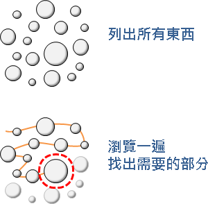
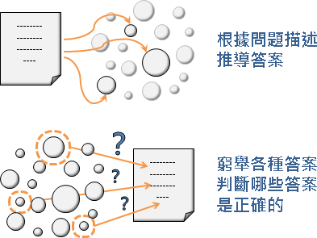

Enumerative Method（Under Construction!）
程度★ 難度★
愚者千慮，必有一得。《史記》
Enumerate
「枚舉」、「列舉」。把目標物一筆一筆列出來，進行計算。
舉例：枚舉一百個平方數
採用直接法：依序枚舉數字1到100；枚舉過程當中，將數字平方得到平方數。
採用試誤法：依序枚舉數字1到∞；枚舉過程當中，判斷數字是不是平方數。
Search
「搜尋」。把所有東西瀏覽一遍，從中找出需要的部份。一旦找到了所有需要的東西，就可以即刻中止搜尋。
舉例：找出數列裡的特定數字
瀏覽數列，尋找特定數字。一旦找到了一個，就停止搜尋。
舉例：找出數列裡的極大值
瀏覽數列，逐一比較數值大小。最後就求出了極大值。
Enumerative Method（Exhaustive Search）
「枚舉法」、「列舉法」、「窮舉法」，是Enumerate與Search兩種動作的結合。枚舉全部數據，逐一計算，無一遺漏。瀏覽一遍所有東西，就能收集到充分的資訊，進而解決問題。
1. 找出不確定的因素（變數）。 2. Enumerate：枚舉所有可能性。 3. Search：逐一判斷正確的要素（數值）。
舉例：統計分數
實作窮舉法，可以用迴圈、遞迴、條列大量判斷式等等方式。
舉例：啦啦啦
嘿嘿嘿
舉例：one-pass和multi-pass
實作程式時，可以採用one-pass：一邊枚舉，一邊搜尋；也可以採用two-pass，枚舉所有數據，儲存在資料結構當中，之後才搜尋。
先排序、再搜尋
資料有預先整理的話，搜尋就會變得容易又快速。
我們可以先將資料依照大小順序排序，或者先將資料置入特別的資料結構當中，讓資料具有特性；然後運用該特性，設計特別的演算法，略過不相關的資料，快速找出正確資料。例如排序後使用Binary Search，又例如將資料置入Hash Table等等。
舉例：
資料結構
二分搜尋
依照特殊順序窮舉與搜尋
我們可以依照資料大小進行窮舉，或者依照特殊順序進行窮舉，一邊窮舉一邊搜尋。
中途相遇法
交互前進法
UVa 972 10464
特殊的窮舉法
Backtracking 窮舉多維度的數據，以遞迴方式進行。 State Space Search 窮舉所有的狀態，並依照衍生關係整理成樹狀圖或者網狀圖，在圖上搜尋。
Enumerate Permutations（Under Construction!）
程度★ 難度★★★
前言
電腦擅於處理大量資料。處理大量資料，除了大家熟悉的排序和搜尋以外，其實還有排列和組合。
很多時候我們想要知道最好的排列組合方式，像是求最佳排列的問題Travelling Salesman Problem、Scheduling Problem，像是求最佳組合的問題Partition Problem、Knapsack Problem。
想要解決這些問題，最簡單的方法就是枚舉法。枚舉所有可能的排列、枚舉所有可能的組合，一一驗證，就能找到最好的排列方式、組合方式。
排列
排列就是交換位置。排列就是交換順序。
例如有五筆資料 ●★■▲◆ 這是其中一種排列 ▲●◆★■ 這也是其中一種排列 ●★■▲◆
枚舉所有排列
這個網頁介紹了幾個枚舉所有排列的演算法：
http://www.cut-the-knot.org/do_you_know/AllPerm.shtml
最有效率的演算法是Steinhaus-Johnson-Trotter Algorithm。
STL next-permutation
替各種排列進行編號
http://en.wikipedia.org/wiki/Lehmer_code
http://stackoverflow.com/questions/1506078/
Enumerate Combinations（Enumerate Subsets）
程度★ 難度★★★
組合（子集合）
組合、子集合的意思是：從一堆東西當中，挑出其中幾個。可以全部都挑，也可以什麼都不挑。
組合就是挑選。組合就是剔除。無關順序。
例如有五筆資料 ●★■▲◆ 這是其中一種組合 ★■◆ 這和方才是同一種組合 ◆★■ 這是其中一種組合 ▲ 這是其中一種組合 ●★■▲◆ 這是其中一種組合 nothing
替各種組合進行編號
一個二進位數字剛好可以代表一個子集合，每個位元代表每個集合元素，最低位數通常代表第一個元素，最高位數通常代表最後一個元素，0代表元素不存在，1代表元素存在。
0 1 2 3 4
U = {lemon, orange, lime, apple, banana};
43210
二進位數字01010，即是子集合 {orange, apple}
二進位數字00001，即是子集合 {lemon}
二進位數字00000，即是子集合 { }
實作程式碼時，運用資料結構「Bitset」儲存一種組合，可以節省空間。運用程式語言的「Bitwise Operation」語法，可以節省時間。
枚舉所有組合（子集合）
http://www.applied-math.org/subset.pdf
不嫌棄的話，也可以使用「Backtracking」來枚舉。
一、字典順序（Lexicographic Ordering）：二進位數字由小到大排列。
000 001 010 011 100 101 110 111
二、Gray Code：相鄰數字僅改動一個位元。
000 001 011 010 110 111 101 100
三、Banker's Sequence：先枚舉小集合，再枚舉大集合；同樣大小的集合們之間，先枚舉二進位數字大的（字典順序大的），再枚舉二進位數字小的（字典順序小的）。
000 100 010 001 110 101 011 111
【待補程式碼】
排容原理
UVa 10325 11806 10458
Straightforward Method / Trial and Error
程度★ 難度★
Straightforward Method
「直接法」，直接算出答案。例如套用公式計算答案、觀察得到答案、依照流程進行最後得到答案、直接印出答案，這些都算是「直接法」。
UVa 488 10055 10370 10878 10929
Trial and Error
「嘗試錯誤法」、「試誤法」。針對答案進行Enumerate與Search的策略。有些困難的問題，難以直接推導答案，既然推導不出來，就慢慢測試答案、慢慢驗算吧──確立答案的範圍，窮舉所有可能的答案，再從中搜尋正確答案。
直接法和試誤法剛好相反。直接法是由題目本身下手，推導答案；試誤法則是從答案下手，讓答案迎合題目需求。
UVa 10167 10125 296 846 714
舉例：Exhaustive Key Search（Brute Force Attack）
在密碼學領域，破解密碼最簡單的方法叫做「暴力攻擊」。不知道密碼規則的情況下，就無法直接推導正確密碼；只好以試誤法一一檢驗所有可能的密碼，從中找出正確密碼。
延伸閱讀：One-way Function
「單向函數」是一種特別的函數，給定輸入很容易算出輸出，但是給定輸出卻很難算出輸入。
舉例來說，令一個函數的輸入是兩個質數，輸出是兩個質數的乘積。給定兩個質數可以輕易的在多項式時間內算出乘積，然而給定兩質數的乘積卻需要指數時間才能完成質因數分解。
如果給定一個單向函數的輸入，求其輸出，就適合用直接法，套用函數快速算得答案；如果給定一個單向函數的輸出，求其輸入，就適合用試誤法，嘗試各種輸入並套用函數快速驗證答案。